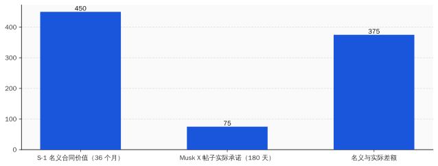
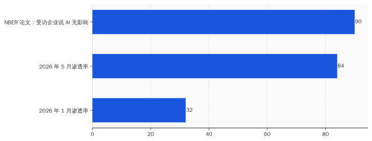
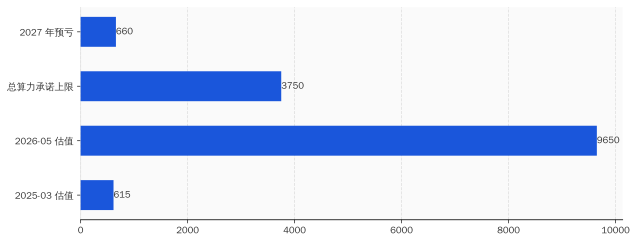

一、5 月 28 日下午两个时间戳
把 5 月 28 日这一天的事按时间排开。
美东时间下午 4 点 17 分——Anthropic 把 Series H 公告挂在 anthropic.com 的 newsroom。标题原文：「Anthropic raises $65B in Series H funding at $965B post-money valuation」。投资人名单：ICONIQ、Lightspeed、TPG、Fidelity、Blackstone、Coatue 领投；Dragoneer、Greenoaks、Sequoia、Altimeter 跟投每家约 20 亿；hyperscaler 们一共"previously committed" 150 亿，其中 Amazon 自己 50 亿写在脚注。run-rate 营收 470 亿美元——是截至 5 月初的年化值。比 2 月那笔 35 亿 run-rate 涨了 13 倍。比 2025 年底 90 亿涨了 5 倍。Anthropic 用的是 run-rate，不是 trailing twelve months——这个区别第三节会用到。
Series H 之后，Anthropic 估值正式超过 OpenAI。OpenAI 3 月 31 日最后那轮 122 亿融资关账时投后 8520 亿——两个月之前 OpenAI 还是世界上最值钱的初创。8 天前，5 月 20 日，OpenAI 自己也悄悄提交了 confidential S-1，IPO 在路上。两家在赛跑（笑），谁先把 S-1 公开版本挂出来谁先收割二级市场流动性。
按 Anthropic 自己公告里给的数字：Fortune 10 里 9 家是客户，10 万家以上企业付费，1000 家以上客户每家每年付超过 100 万美元。
Krishna Rao 的官方 quote 我前面贴过。Dario Amodei 这次没出官方 quote——他在 Series H 公告里只挂了一句"We are profoundly grateful to our investors"。CEO 公告挂一句话感谢，CFO 挂一段话谈 Claude——这个分工本身值得看一眼，意味着这一轮的叙事重心是财务面、不是研究面。
太平洋时间下午 6 点 02 分——Series H 公告挂上去 1 小时 45 分钟之后——Elon Musk 在 X 上回了那条 8400 转发的帖子。原帖问的是 SpaceX 给 Anthropic 的算力合同：是不是真的写到 2029 年。Musk 的回复，是把这份 8 天前在 S-1 里写得清清楚楚到 2029 年 5 月的合同，"澄清"成 180 天的租约 + 90 天双方可取消。Musk 这两句话用词很有意思。「short term was our request」——是我们要求的短期；「we might need it back」——我们可能拿回去。把控制权牢牢握在 SpaceX 这一边。
8 天前 S-1 里写的是「at present, expected to extend through May 2029, subject to early termination by either party upon 90 days' written notice」——双方任一方可凭 90 天书面通知终止。文件没写 180 天初始期。SEC 备案的文本和 CEO 当天在社交媒体的"澄清"，对不上。
这两个时间戳之间，差了 1 小时 45 分钟。差的是什么——
是估值锚的稳定性。
生成 Prompt
A flat minimalist illustration showing a large neon storefront billboard reading "$965B" being held up by thin scaffolding, while a tiny tweet bubble at the bottom is pulling out a paper labeled "lease" from underneath the scaffolding. Tech style, blue and white color palette, no text on the storefront other than the dollar value, clean white background
二、12.5 亿 × 36 个月 = 450 亿，Musk 改口后剩 75 亿
把那份 SpaceX 合同条款逐条摆出来，看 8 天前的"原始版本"长什么样。
来源是 SpaceX S-1，2026 年 5 月 20 日递交，SEC EDGAR CIK 0001181412。文件里关于 Anthropic 那一段大致原文（节选）：
「Effective May 2026, we have entered into a customer agreement with Anthropic, PBC for the provision of compute capacity at our Colossus data center facility. Subject to monthly payments of approximately $1.25 billion, the agreement is expected to extend through May 2029, subject to early termination by either party upon 90 days' written notice.」
「Anthropic 自 2026 年 5 月起向 SpaceX 支付约 12.5 亿美元/月，预期至 2029 年 5 月，任一方可凭 90 天书面通知终止。」
这份合同的标的是 Colossus 1——SpaceX 在路易斯安那州 Caddo Parish 建的数据中心。300 兆瓦电力。22 万张 Nvidia GPU。混合 H100、H200、GB200。Tom's Hardware 2026 年 1 月那篇报道里给过容量分布。
12.5 亿一个月，36 个月，名义价值 450 亿美元。
Musk 5 月 28 日 X 上的版本不一样。把 Musk 那两句话和 S-1 文本逐项对比：
| 项 | S-1（2026-05-20） | Musk X 帖子（2026-05-28） |
|---|---|---|
| 起始 | 2026 年 5 月 | 2026 年 5 月 |
| 月费 | ~$1.25B | （未提） |
| 初始期 | 至 2029 年 5 月 | 180 天 |
| 终止条款 | 双方 90 天通知 | "可能算力紧张时拿回" |
| 客户控制权 | 写在合同里 | "我们要求短期" |
| 名义合同价值 | ~$45B | ~$7.5B（180 天 × $1.25B） |
差额是 375 亿。
需要补两句话。"180 天 + 90 天可取消"这个组合在企业算力采购里有个名字，叫"试用期 + 双方可走"。这种条款本身不少见——AWS、Azure、Google Cloud 都给大客户做过类似试用。问题不在条款本身，问题在两件事。
第一件，S-1 文本和 CEO 在 X 上的口径对不上。SEC 备案文件里写到 2029 年 5 月，CEO 当天说 180 天。两个版本写在不同地方、面向不同读者、产生不同后果。S-1 是给 IPO 投资人看的——说"我们和 Anthropic 锁了 36 个月、450 亿"；X 帖子是给客户看的——说"算力紧张时我们拿回来"。
S-1 是法律文件。X 是社交媒体。法律文件按 securities fraud 标准看，社交媒体按 vibes 看。一份合同同时跑在两套标准上。
第二件，Anthropic 的 Series H 估值锚定这份合同——锚的是 36 个月版本，不是 180 天版本。9650 亿估值假设 Anthropic 拿到的算力是可锁定、可摊销、可在财务模型里折现到 2029 年的资产。Musk 当天用一条 X 帖子告诉市场——这资产，我 180 天能拿回。
Anthropic 那边没有官方回应。一直到本文完稿为止，anthropic.com 没出过澄清。Dario 没出过推文。Krishna Rao 没出过 quote。8 天前 CFO 出现在 SpaceX 自家 S-1 文件里有头有脸的客户名册上，8 天后 SpaceX CEO 在公开社交平台说"那不算 36 个月合同"——Anthropic 选择不回应（笑）。
不回应有两种解读。一种是"Musk 在 X 上瞎说，正式合同已签到 2029 年"。另一种是"S-1 那段是 SpaceX 单方面表述，Anthropic 没承诺到 2029 年"。两种解读，二级市场的估值后果差出 375 亿。
Anthropic 不回应的成本，是 Series H 那份估值表里那一格"算力承诺"该填多少。

三、Q2 那笔 5.59 亿盈利，是 5、6 月那两个月凑出来的
CNBC 2026 年 5 月 20 日那篇《Anthropic set to hit $10.9 billion in revenue in Q2》，作者 Hayden Field。文章引述了三个数字：Q1 营收 48 亿、Q2 预期 109 亿（环比 +130%）、Q2 预期运营利润 5.59 亿。
毛利率倒推一下，大约 5%。换句话说 Q2 109 亿收入里，103 亿要付出去——绝大部分是算力账单。
5.59 亿是个标志性数字。这是 Anthropic 首次实现季度运营盈利。OpenAI 至今没盈利过——3 月 31 日 122 亿融资关账时投后估值 8520 亿，但 GAAP 口径每个季度都在亏。Anthropic 这次"先盈利、再 IPO"的剧本，本来是 2026 年 AI 行业最大的转折点。
Ed Zitron 5 月 25 日发的《Anthropic's "Profitability" Swindle》——swindle 这个词在英文里意思是"骗局"——把这笔盈利拆解了一遍。Zitron 是 Where's Your Ed At / Better Offline 的主理人，长期写 AI 商业模式批评。他这篇文章的核心论据有两条。
第一条：Q2 的 5、6 月这两个月，正好是 SpaceX-Anthropic 合同的"前两个月"。合同 2026 年 5 月生效——Q2 的 4 月还没生效，5、6 月生效。SpaceX 这边作为新供应商，给前两个月一笔"前期客户优惠"是行业惯例。优惠多少不公开。S-1 里也没写。
第二条：在算力账单占成本 95% 以上的情况下，前两个月的供应商优惠，可以直接把这两个月的毛利率从平时的 -5% 拉高到 +5%。两个月凑出来的 5.59 亿盈利，足够撑起整个 Q2 的 GAAP 报表。
Gary Marcus 2026 年 5 月 27 日在 Substack 发了《Breaking: bad news for three of the biggest IPOs in history》，把 Zitron 的论点接着推了一层。Marcus 原话：
「That is amazing—assuming it actually happens—but if it does it will be in no small part because Anthropic is getting a one-time (nonrecurring) discount for that quarter on compute from SpaceX. The exact number is not given but that discount may well be bigger than the projected $559M profit.」
那笔折扣可能比 5.59 亿利润本身还大。
折扣额度多少，没人知道。SpaceX S-1 没披露。Anthropic 官方公告没披露。CNBC 那篇报道引的是知情人士，知情人士也没披露具体金额。
3 月 9 日 Krishna Rao 在加州北区法院案 No. 3:26-cv-01996 的 sworn declaration 里宣誓签字，原话：
「Anthropic's total revenue to date exceeds $5 billion.」
Anthropic 成立至今总收入超过 50 亿。
这个声明日期是 3 月 9 日，对应的是 2025 年底前的累计数。Q1 2026 营收 48 亿——意味着 Q1 一个季度就快赶上"成立至今总营收"。这是真增长，没人否认。
但有个数字对不上。Sacra 的 Anthropic dossier 里写 Anthropic 2025 全年营收 70 亿——比 Krishna Rao 法庭宣誓的"成立至今 50 亿"高出 20 亿。两个数字的差额，可能来自不同口径——bookings、recognized revenue、合并报表 vs 单体——但 Anthropic 没公开过任何一份对账。
法庭宣誓数、官方 ARR 数、Sacra 估算数，三个相互独立的数据点，差额未被解释。Series H 的 9650 亿估值同时援引了第二个——「run-rate 470 亿」。这个 run-rate 怎么算的、5、6 月 SpaceX 折扣有没有计入分母、算入哪个时点——Anthropic 不披露。
CFO 不披露。CEO 不出 quote。Series H 公告里反复出现的措辞是"crossed $7 billion in annualized revenue""run-rate exceeding $47 billion in early May"——全部用 run-rate 和 annualized 这两个词。这两个词的特点是：用某一个具体时点的当月数字 × 12，就能算出来。如果那个具体时点恰好是 5、6 月——SpaceX 折扣最厚的两个月——这两个数字就能比"正常 trailing twelve months"高一截（笑）。
这不是会计造假。这是合规口径下的估值故事。两件事不一样，但二级市场看的是估值故事，不是会计造假。
生成 Prompt
A flat minimalist illustration of a quarterly financial report showing a large bold "$559M Q2 PROFIT" headline at top, with a tiny asterisk footnote at the very bottom barely readable showing "*includes one-time discount from supplier (amount not disclosed)". Above the report, a confetti celebration. Tech style, blue and white color palette, clean white background
四、"Fortune 10 里 9 家是客户"——Uber 用 4 个月烧完了整年 AI 预算
Anthropic Series H 公告里反复提的客户口径有三条：「9 of the Fortune 10」、「100,000+ businesses」、「1,000+ customers each spending over $1 million per year」。
这三个数字本身都不假。但都在回避一个问题——
这些客户为什么用 Claude。
Praveen Neppalli Naga，Uber CTO，2026 年 5 月初在 Brian Halligan 的 Rapid Response Podcast 里给了一个一手案例。Cybernews 后来把他的发言转成了文章。
Uber 内部 Claude Code 使用率从 32% 涨到 84%，用了 4 个月。同期单个工程师每月 API 花费在 500 到 2000 美元之间。Uber 2026 全年的 AI 预算——Naga 在那期播客里原话——4 个月烧光。
为什么烧得这么快。Naga 自己给的解释，KPI 是"prompts per engineer"——每个工程师每月发的 prompt 数。这个指标越高代表使用率越高，使用率越高代表 AI 转型推进得越好，使用率越好代表团队下个季度不被裁。所以工程师不烧 token，等于自己给自己挖坑。
Uber CTO 自己披露这件事——意思是 Uber 自己也意识到，渗透率涨到 84% 这件事，不全是因为 Claude 真的把效率提了。
NBER 工作论文 2026 年 2 月那篇《Generative AI at Work: Evidence from US Manufacturing》——3 万家美国制造业企业面板数据——结论是：90% 受访企业反映 AI 对工作和生产力毫无影响；只有高管投影中，AI 将给 2027 年带来 1.4% 生产率增长。NBER 那篇文章里有一句被广泛引用的话：「Implementation is not impact.」部署不等于影响。
把这两份数据放一起看。Anthropic 的「9 of the Fortune 10」是事实——Walmart、ExxonMobil、Apple、UnitedHealth、CVS、Berkshire、Alphabet、McKesson、Amazon——九家肯定在用 Claude 或者 Claude Code。但「在用」和「在烧 token、拉满 KPI、年底续费、明年加预算」之间，还差 5 个 ROI 计算。
Uber 是头部 AI 客户。Uber 的 CTO 自己说全年预算 4 个月烧完。Uber 这种规模的客户，把预算烧完之后，要么砍 KPI、要么砍预算、要么砍 Anthropic。砍哪个不知道，但 5、6、7、8 月这四个月之后，Uber 一定要做这个选择。
Sacra 那份 Anthropic dossier 里有一组数字：超过 1000 家企业客户每家年付超过 100 万美元，2 个月翻倍。这是按月度账单倒推的 ARR 数字。两个月翻倍意味着——这些客户里，相当一部分还在初始 ramp-up 阶段，账单从 0 涨到 100 万美元/年。如果按 Uber 的节奏，4 个月烧光预算的那一刻就是续约决策时点。
Claude Code 单独的 ARR 是 25 亿美元，截至 2026 年 2 月。增速很猛——但增速的分母是上一个月，不是基线。当一家公司的 KPI 是"prompt per engineer"，这个指标只会涨，不会反映实际生产率。当 KPI 改成"AI ROI per engineer"，曲线立刻翻向另一边。
这里需要补一句反方论据。Brad Gerstner（Altimeter Capital 创始人）在 2026 年 2 月 BG2 Pod 那期里给的判断："Anthropic has won the enterprise market"——Anthropic 已经赢了企业市场。Gerstner 的依据是企业客户结构本身就是黏的——一旦把 Claude 嵌入 CI/CD、嵌入内部知识库、嵌入产品工作流，迁移成本极高。这个判断有道理，但前提是企业不在 KPI 倒推预算。Uber 的案例说明前提不成立。
KPI 一改，token 就断。token 一断，run-rate 470 亿就要重算。

五、估值 20.5 倍、算力承诺 1800 亿、2027 年预亏 660 亿
把 Anthropic 估值历史曲线和算力承诺账本并排摆出来。
估值曲线：
| 时点 | 估值（亿美元） | 倍数 |
|---|---|---|
| 2025-03 | 615 | — |
| 2025-09 | 1830 | 3.0x |
| 2026-01 | 3500 | 5.7x（vs 2025-03） |
| 2026-02 | 3800 | 6.2x |
| 2026-05 | 9650 | 15.7x |
14 个月，估值翻 15.7 倍。
算力承诺账本，这是 Anthropic 已经公开承诺的、写在博客或合同里的对外支付义务：
| 算力供应商 | 承诺金额 | 期限 | 来源 |
|---|---|---|---|
| AWS | $100B+ | 10 年 | 2026-04-20 公告 |
| Google Cloud / Broadcom | $200B | 5 年 | 2026-04-24 公告 |
| Microsoft Azure | $30B | 未公开 | 2026 早期协议 |
| SpaceX Colossus | $45B（名义） | 至 2029-05 | 2026-05-20 S-1 |
| 合计承诺上限 | >$375B | 5-10 年 | |
| 摊到每年 | ~$60B–$75B/年 | | |
把 Series H 公告里的 470 亿 run-rate 和这 60-75 亿/年承诺并排——一家"刚到 470 亿年化营收"的公司，已经签下了未来每年最少 60 亿、最多 75 亿的外部算力承诺。
The Information 4 月那期投资人材料（被 Sacra 转引）里的预亏数字：2026 年预亏 290 亿美元，2027 年预亏 660 亿美元。
这两个数字也是数字游戏。「预亏」算的是 GAAP 口径下的 net loss，包含算力摊销、研发、补贴。"预测"的部分是营收增速——如果 2027 年 Anthropic 营收能从 2026 年的 ~$50B 涨到 ~$120B，那 660 亿预亏才落在"合理增长期亏损"区间。如果 2027 年营收只涨到 ~$70B，660 亿预亏就是结构性的。
营收增速取决于什么——取决于企业客户续不续约。续不续约取决于 ROI——ROI 在 NBER 那份论文里是 90% 不可见的。
把这三套数字摞起来：估值 9650 亿、年化营收 470 亿、年算力承诺 60-75 亿、2027 年预亏 660 亿。一家估值倍数 20.5x（基于 run-rate）、未来每年至少要付 60 亿算力账单、明年要亏 290 亿的公司。
同期 NVIDIA Q1 FY27 财报——5 月 20 日递交的 8-K——单季营收 816 亿，数据中心业务 752 亿。NVIDIA 一个季度从这个生态里赚的钱，比 Anthropic 全年营收还多 6 倍。
钱进了 NVIDIA。Anthropic 的角色是：(a) 给 NVIDIA 兜单——通过 AWS / Google / SpaceX 转手把推理需求摊到 GPU；(b) 给市场提供 GAAP 口径下的"AI 商业模式正在跑通"的叙事；(c) 把 ICONIQ / Lightspeed / TPG / Fidelity / Blackstone / Coatue 这些 LP 的钱锁在自己资产负债表上。
第一项的受益方是 NVIDIA。第二项的受益方是整个 AI 投资生态——包括 OpenAI 的 IPO 估值。第三项的受益方是 Anthropic 自己。
谁是这一轮里付钱的——是 LP 池子里那些等着 2026-2028 年退出窗口的养老金、主权财富基金和大学捐赠基金。

六、Series H 这 650 亿，是同一张支票在 5 家公司之间转账签名
把这一周和 Anthropic 估值相关的 5 件事拼起来，看一个共同点。
5 月 20 日——SpaceX 在 SEC EDGAR 提交 S-1。文件里第一次曝光 Anthropic 12.5 亿美元/月的合同。同一天，OpenAI 也在 Axios 报道里被确认提交了 confidential S-1。同一天，NVIDIA 公布 Q1 FY27 财报，单季 816 亿、数据中心 752 亿。同一天，WSJ 和 CNBC 援引知情人士披露 Anthropic Q1 营收 48 亿、Q2 109 亿、首次盈利 5.59 亿。四件事挤在同一天。
5 月 22 日——Bloomberg 抢发"Anthropic to Close Over $30 Billion Round as Soon as Next Week"，写的是 30B+ 募资和 900B+ 估值。这个数字 6 天后被翻倍——实际公告的是 650 亿 / 9650 亿。Bloomberg 的知情人士只看到了底牌的一半。 5 月 25 日——Ed Zitron 发《Anthropic's "Profitability" Swindle》。Zitron 这篇文章在 Better Offline / Where's Your Ed At 上的阅读量到本文截稿时是 80 万次，被 Hacker News、Bloomberg Opinion 多次转载。 5 月 27 日——Gary Marcus 跟着发《Breaking: bad news for three of the biggest IPOs in history》。指名要看的三家是 OpenAI、Anthropic、SpaceX——这三家都在 2026 年中段同步走 IPO 流程。Marcus 在文中给的判断是「Caveat emptor」——买者自负。 5 月 28 日——Anthropic Series H 关账。同日 Musk 在 X 改口 SpaceX 合同。同日发布 Claude Opus 4.8——SWE-bench Verified 88.6%、SWE-bench Pro 69.2%。SWE-bench Pro 这个数字是 4 月对外开的新基准，前代 Claude Opus 4.7 跑 64.3%，4.8 涨 4.9 个百分点。把这五天合起来看，每一件事都在为同一笔交易做注脚。
Anthropic 拿到的 650 亿，要花到三个地方：AWS、Google Cloud、SpaceX——三家算力供应商。三家算力供应商的算力来自哪里——NVIDIA 的 GPU。NVIDIA 的 GPU 谁付钱——AWS、Google Cloud、SpaceX 自己。AWS 和 Google 的 GPU 采购预算从哪里来——一部分来自 Anthropic 的预付账单。SpaceX 的 GPU 采购预算从哪里来——一部分来自 Series E 之后的融资和 Starlink 自由现金流，但 Colossus 这块也需要 Anthropic 的预付。
一笔 650 亿融资款，在 Anthropic → AWS → NVIDIA → AWS → Anthropic 这个圈里转一圈，五家公司的资产负债表都增厚一次。
Bloomberg Graphics 4 月那张《AI Circular Deals》图，把这个循环画了三家版本——OpenAI、Microsoft、NVIDIA 互相投资+互相采购。Anthropic 在那张图上是个角落。5 月 28 日之后，Anthropic 从角落升到了正中——通过 AWS、Google、SpaceX 三家算力枢纽嵌进同一个循环。
OpenAI 同一周提交 S-1，时间紧贴 SpaceX 那次提交。两家 SEC 备案放在一起，给市场释放的信号是"AI IPO 在路上"。但 OpenAI 8520 亿、Anthropic 9650 亿——两家估值差 1130 亿。OpenAI 投行已经定下 Morgan Stanley + Goldman 领衔。Anthropic Series H 关账之后下一步就是公开 S-1。两家的 IPO 节奏在赛跑——谁先上谁先收割二级市场流动性。
这场赛跑的胜负，取决于 Q2、Q3 的财务报表。Q2 已经预告了 5.59 亿首次盈利。Q3 没人保证再续——续不续取决于 SpaceX 折扣还在不在。SpaceX 折扣还在不在，取决于 Musk 那天的心情。
Daron Acemoglu 5 月 11 日在 MIT Technology Review 那期采访给的预测是：AI 在未来 10 年只会给美国 GDP 涨 1.1%，年生产率涨 0.05%。Acemoglu 是 2024 年诺贝尔经济学奖得主，他这个数字和 Goldman Sachs 同期给的 7% 差出 70 倍。Acemoglu 那期采访里特别点了三件事——"agentic AI deployments""enterprise ROI realization""compute concentration"——三件事全部对应 Anthropic 这一周的故事。
第一件——agent 的实际部署效果——上周 ClawBench 数据出炉，153 个真实网站任务，最强模型 33.3%。第二件——企业 ROI 兑现——Uber CTO 自爆 4 个月烧光年预算、NBER 论文 90% 企业看不到影响。第三件——算力集中度——SpaceX/AWS/Google/Microsoft 四家把全球 80% AI 训练算力包了。
三件事里，本周新增的最重要数据点是第二件的反面——Uber CTO 那段 Rapid Response Podcast 自白。这条信息没进 Anthropic 公告，没进 Bloomberg 报道，没进 CNBC 报道，但它在那期播客里就摆着。tokenmaxxing 这个词是 Gary Marcus 5 月 27 日那篇文章里造的——意思是企业为了不掉队鼓励员工无脑灌 token。tokenmaxxing 就是 run-rate 470 亿的真实成色。
那条把"36 个月、450 亿"改口成"180 天、75 亿"的推特发出来 1 小时之后，Anthropic 估值 9650 亿这个数字仍然挂在 newsroom 上。8 天之内已经发布的 S-1 文本写得清清楚楚到 2029 年 5 月。Series H 投资人当天看到了 Musk 那条推特。Krishna Rao 看到了。Dario Amodei 看到了。
没人回应。
不回应有不回应的好处——估值已经锚住，9650 亿这个数字已经写在每一份基金的内部估值表上、每一份投资人新闻通稿上、每一份 Anthropic IPO roadshow 的 banner 上。回应只会给市场两种选择题——一种"反驳 Musk"（伤情面），一种"承认 180 天"（伤估值）。两种都是损失。最优解是不回应（笑）。
3 个月之后，下一份 Q3 财报出来。Q3 财报里 SpaceX 折扣还在不在、450 亿/75 亿这个差额怎么记账、Anthropic 的 IPO 时点定不定——三件事会同时摊牌。9650 亿这个数字能不能撑过去，看 Q3。
Mustapha Lazrek 上周（5 月 13 日）说「agents that actually do the work」。Musk 这周（5 月 28 日）说「The short term was our request」。两句 corporate-speak，意思完全相反，但句式一模一样——都是把对方该承担的风险，悄悄挪到自己想要的位置。
agent 把工作风险挪给企业 IT。Musk 把合同风险挪给 Anthropic。Anthropic 把估值风险挪给 LP。
风险最后到了谁那。
到了那些以 9650 亿估值认购了 Anthropic Series H、相信 run-rate 470 亿能撑到 IPO、相信 SpaceX 那份合同能跑到 2029 年的人。Brad Gerstner、Doug Leone、Roelof Botha、Marc Stad——这一轮领头的几个名字，背后是 LP 池子里那些 5 年、10 年、20 年才能退出的耐心资本。
耐心资本能等。Musk 那条推特不能。
就这。
生成 Prompt
A flat minimalist illustration of five corporate buildings arranged in a circle (Anthropic, AWS, NVIDIA, SpaceX, Google), with a single dollar-shaped check flowing in a circular arrow pattern between them, being endorsed and signed at each stop. Tech style, blue and white color palette, no text on the buildings, clean white background